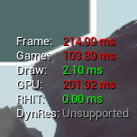

| Role | Gameplay, Tools & Network Programmer |
|---|---|
| Team | Sticks & Stones 22 students |
| Duration | September 2018 - July 2019 |
| Engine | Unreal Engine 4.22 |
| Platforms | Windows 10, Steam |
| Language | C++11 |
Description
Stellar Survivor is a first-person, co-op photo-realistic survival game. Players can play alone or together with friends on Steam to defend their powercore against waves of aliens. Players do so by the use of weapons and traps with different characteristics that when put to good use, can take down these aliens effectively.
For this project we had 4 working days per week for 1 school year. During the first block, or 8 weeks, I focused on designing the game conepts using pitches and meetings, and set up our build pipeline for Jenkins and Steam. The remaining months I worked on implementing GameSparks and SteamWorks for online matchmaking and user authentication, as well as actor and property replication. I was also part of a Stability/QA team focused on fixing crashes and bugs using Unreal Engine's crash dumps, profiling tools, and navigating call stacks.
My contributions
Network engineering
Although I was mostly focusing on gameplay, during the production phase I worked on functionality for match making and online multiplayer. This involved the development of a lobby system for friends to join via Steam, and replicating gameplay events to all clients.Online matchmaking
Initially we used a SDK for online matchmaking called GameSparks, which throughout early development turned out to be unreliable and hard to use on multiple platforms. We then moved to SteamWorks, which I implemeneted together with a fellow student programmer.
bool USurvivalGameInstance::CreateSession(FName arg_SessionName, bool arg_bIsLAN, bool arg_bIsPresence, int32 arg_MaxNumPlayers)
{
const IOnlineSubsystem* OnlineSubsystemInterface = IOnlineSubsystem::Get();
if (OnlineSubsystemInterface)
{
IOnlineSessionPtr OnlineSessionInterface = OnlineSubsystemInterface->GetSessionInterface();
if (OnlineSessionInterface.IsValid())
{
SessionSettings = MakeShareable(new FOnlineSessionSettings());
SessionSettings->bIsLANMatch = arg_bIsLAN;
SessionSettings->bUsesPresence = arg_bIsPresence;
SessionSettings->bAllowInvites = true;
const ULocalPlayer* LocalPlayer = GetFirstGamePlayer();
if (LocalPlayer->IsValidLowLevelFast())
{
FUniqueNetIdWrapper UniqueNetIdWrapper = FUniqueNetIdWrapper(LocalPlayer->GetPreferredUniqueNetId());
GEngine->AddOnScreenDebugMessage(-1, 5.0f, FColor::Cyan, TEXT("Creating Session!"));
UE_LOG(SessionLog, Log, TEXT("Creating Online Session..."));
return OnlineSessionInterface->CreateSession(*UniqueNetIdWrapper.GetUniqueNetId(), arg_SessionName, *SessionSettings);
}
}
}
return false;
}By enabling online presence in Unreal Engine 4's Online Subsystem, it's quite easy to look for sessions. In our case however, we wanted to give friends the ability to join through Steam.
bool USurvivalGameInstance::JoinFriend(FBPUniqueNetId arg_FriendNetId)
{
GEngine->AddOnScreenDebugMessage(-1, 5.0f, FColor::Cyan, FString::Printf(TEXT("Joining Player with ID: %d"), *arg_FriendNetId.GetUniqueNetId()->ToString()));
IOnlineSubsystem* OnlineSubsystemInterface = IOnlineSubsystem::Get();
if (OnlineSubsystemInterface)
{
IOnlineSessionPtr OnlineSessionInterface = OnlineSubsystemInterface->GetSessionInterface();
if (OnlineSessionInterface.IsValid())
{
const ULocalPlayer* LocalPlayer = GetFirstGamePlayer();
if (LocalPlayer->IsValidLowLevelFast())
{
OnFindFriendSessionCompleteDelegateHandle = OnlineSessionInterface->AddOnFindFriendSessionCompleteDelegate_Handle(LocalPlayer->GetControllerId(), OnFindFriendSessionCompleteDelegate);
return OnlineSessionInterface->FindFriendSession(LocalPlayer->GetControllerId(), *arg_FriendNetId.GetUniqueNetId());
}
}
}
return false;
}Social interations
Using Blueprints and UMG in Unreal engine 4, I managed to let players send and receive chat message on Steam and local connections.
Using Blueprints and UMG in Unreal engine 4, I managed to replicate player names above the player character on Steam and local connections.
Replication
Previewing and spawning models.
Previewing and spawning models.
Gameplay
Enemy AIC, behaviour tree, blackboard.
Quality Assurance

My first task as QA programmer was to analyse our game's network performance using Unreal Engine's .NET network profiler. By recording a few online multiplayer samples of about 5 minutes, I figured out that a few actors (game objects) were replicated either too frequently or had unnecessary network replication. I then implemented different settings, such as net work culling distances and RPC's to replace the slower methods. A few times this also meant that we had to move even systems, such as an enemy wave spawner, to the server, or simply make them local. I also looked into a replication graph to optimize network performance, although this wasn't necessary after the level was reduced in size by design. The profiler tool was also used to analyse packet loss and track which events had to be marked as reliable, meaning the server would fire an event until it arrives at the client smoothly.
I also had to optimize our game throughout development by analysing the frame times and tickrates using Unreal Engine's stat commands. By using this tool I managed to find numerous bugs, such as an asynchronous event to retrieve texture data being continuously called. Some bug fixes reduced our frame times from 200 ms to 18 ms.